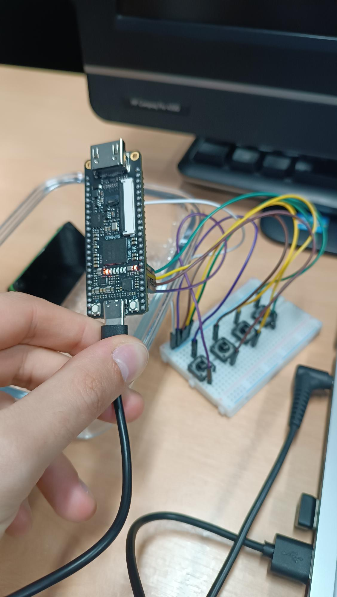
Figura 10 - Estado inicial após reset: caso
UINT8 ADD case=0, sem flags e PASS ativo.
Implementação em Verilog HDL de um núcleo aritmético para a Tang Nano 9K, contemplando inteiros com e sem sinal, ponto fixo Q3.4 e ponto flutuante simplificado E4M3, com validação por simulação, Gowin e hardware real.
O TP3 implementa um núcleo aritmético parametrizável em FPGA. O núcleo recebe dois operandos de 8 bits, um seletor de formato numérico e um seletor de operação. A saída contém o resultado de 8 bits e um conjunto de flags que documenta overflow, underflow, divisão por zero, saturação, operação não suportada e inexatidão por truncamento.
Para a validação física, a montagem foi adaptada aos recursos disponíveis: não foi usado display de sete segmentos. A placa usa quatro botões externos no protoboard, quatro LEDs onboard e uma saída UART textual. A UART foi usada como evidência complementar porque permite enxergar operandos, resultado, flags e status de validação diretamente no terminal.
| Recurso | Sinais | Uso |
|---|---|---|
| Botões externos | btn_n[3:0] | Selecionam modo, operação, caso de teste e retransmissão UART. |
| LEDs onboard | led_n[3:0] | Mostram PASS, flag ativa e bits do modo. São ativos em nível baixo. |
| UART | uart_tx | Transmite uma linha ASCII com operandos, resultado, flags e pass/fail. |
| Clock e reset | sys_clk, sys_rst_n | Clock onboard e reset ativo em nível baixo. |
A largura de 8 bits foi adotada para manter o circuito pequeno, observável nos LEDs/UART e simples de cobrir por testbench. Mesmo com largura reduzida, os formatos exercitam os principais problemas do enunciado: complemento de dois, saturação em ponto fixo, normalização em ponto flutuante e flags de limite.
| Modo | Código | Formato | Faixa / Campos | Decisão de projeto |
|---|---|---|---|---|
| Inteiro sem sinal | 00 | uint8 | 0 a 255 | Operações módulo 8 bits; overflow/underflow são sinalizados por flag. |
| Inteiro com sinal | 01 | int8 | -128 a 127 | Complemento de dois; flags separam estouro positivo e negativo. |
| Ponto fixo | 10 | Q3.4 | -8.0000 a 7.9375 | 1 bit de sinal, 3 bits inteiros e 4 fracionários; saturação nos limites. |
| Ponto flutuante | 11 | E4M3 | 1 sinal, 4 expoente, 3 mantissa, bias 7 | Subconjunto IEEE-754 simplificado, com infinito e normalização básica. |
| Bit | Nome | Significado |
|---|---|---|
| 0 | overflow | Resultado acima do máximo representável. |
| 1 | underflow | Resultado abaixo do mínimo representável. |
| 2 | div_zero | Divisão por zero. |
| 3 | saturation | Resultado saturado no limite do formato. |
| 4 | unsupported | Operação não implementada para o modo selecionado. |
| 5 | inexact | Resultado truncado ou resto descartado. |
O projeto foi organizado em unidades aritméticas independentes e um módulo integrador. Essa separação torna os testbenches mais objetivos e facilita a justificativa dos formatos numéricos.
| Módulo | Responsabilidade | Tratamento numérico |
|---|---|---|
| int_unsigned_alu | Soma, subtração, multiplicação e divisão sem sinal. | Resultado módulo 8 bits; flags para overflow, underflow, divisão por zero e inexatidão. |
| int_signed_alu | Operações inteiras em complemento de dois. | Usa extensão de sinal e detecta estouro fora da faixa -128..127. |
| fixed_q3_4_alu | Operações em ponto fixo Q3.4. | Multiplicação desloca 4 bits; divisão desloca o dividendo; overflow satura em 7Fh ou 80h. |
| minifloat_e4m3_addsub | Soma e subtração de minifloat E4M3. | Alinha expoentes, soma magnitudes sinalizadas, normaliza e trata infinito/underflow. |
| arithmetic_core | Seleciona a unidade pelo modo numérico. | Marca unsupported para multiplicação/divisão em E4M3. |
| tp3_demo_top | Integra botões, LEDs, UART e núcleo. | Compara resultado contra o vetor esperado e transmite a linha textual. |
A saída serial foi usada para tornar a validação física legível. A linha abaixo representa o estado inicial depois de reset:
TP3 mode=UINT8 op=ADD case=0 A=0C B=05 result=11 flags=00 OK pass=YES
O projeto Gowin usa o dispositivo GW1NR-LV9QN88PC6/I5. Os botões externos foram ligados a GND e usam pull-up interno. Os LEDs onboard da placa são ativos em nível baixo.
| Sinal | Pino | Direção | IO Type | Uso |
|---|---|---|---|---|
| sys_clk | 52 | Entrada | LVCMOS33 | Clock onboard. |
| sys_rst_n | 4 | Entrada | LVCMOS18 | Reset ativo em baixo. |
| btn_n[0] | 25 | Entrada | LVCMOS33 | Troca modo numérico. |
| btn_n[1] | 26 | Entrada | LVCMOS33 | Troca operação. |
| btn_n[2] | 27 | Entrada | LVCMOS33 | Troca vetor/caso. |
| btn_n[3] | 28 | Entrada | LVCMOS33 | Retransmite UART. |
| led_n[0] | 10 | Saída | LVCMOS18 | PASS do vetor atual. |
| led_n[1] | 11 | Saída | LVCMOS18 | Alguma flag ativa. |
| led_n[2] | 13 | Saída | LVCMOS18 | Bit 0 do modo. |
| led_n[3] | 14 | Saída | LVCMOS18 | Bit 1 do modo. |
| uart_tx | 17 | Saída | LVCMOS33 | Serial 115200 8N1. |
Os testbenches cobrem as unidades aritméticas isoladas, o core integrado e o top de demonstração com botões, LEDs e UART. Todos os logs terminaram com ALL TESTS PASSED.
| Testbench | Cobertura | Arquivo de evidência |
|---|---|---|
| tb_int_unsigned_alu | Operações unsigned, overflow, underflow, divisão por zero e resto. | evidencias/simulacao/tb_int_unsigned_alu.log |
| tb_int_signed_alu | Complemento de dois, limites -128/127, overflow, underflow e divisão inexata. | evidencias/simulacao/tb_int_signed_alu.log |
| tb_fixed_q3_4_alu | Saturação positiva/negativa, truncamento e divisão por zero em Q3.4. | evidencias/simulacao/tb_fixed_q3_4_alu.log |
| tb_minifloat_e4m3_addsub | Alinhamento, cancelamento, overflow para infinito e underflow para zero. | evidencias/simulacao/tb_minifloat_e4m3_addsub.log |
| tb_arithmetic_core | Varredura de todos os modos, operações e vetores demonstrativos. | evidencias/simulacao/tb_arithmetic_core.log |
| tb_tp3_demo_top | Reset, botões, LEDs e transmissão UART no top. | evidencias/simulacao/tb_tp3_demo_top.log |
./sim/run_all.sh ... ALL TESTS PASSED All simulations completed.
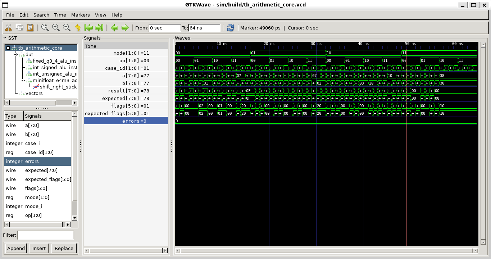
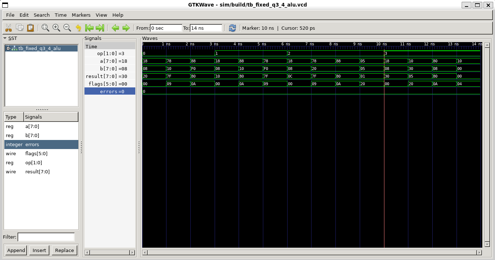
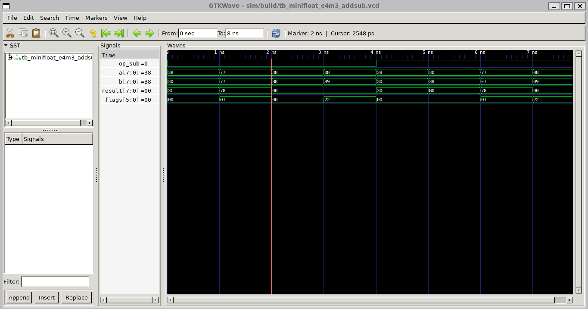
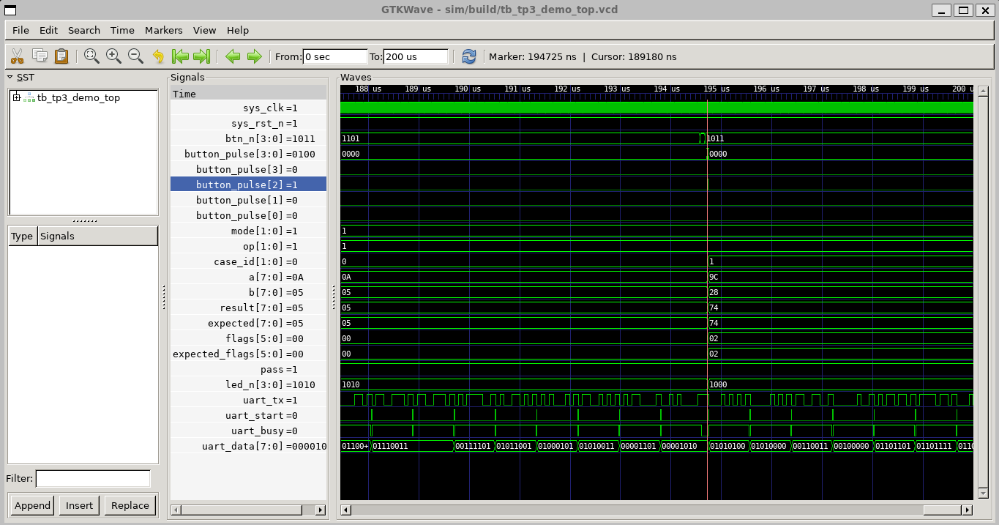
O projeto foi sintetizado e roteado no Gowin IDE para a Tang Nano 9K. A síntese e o Place & Route concluem sem erros. O Place & Route emite apenas o aviso de que sys_clk foi identificado como clock sem constraint temporal explícita; isso não impediu a geração do bitstream e a validação física.
| Recurso | Uso | Utilização |
|---|---|---|
| Logic | 1784 / 8640 | 21% |
| LUT / ALU / ROM16 | 1545 LUT, 239 ALU, 0 ROM16 | - |
| Register | 154 / 6693 | 3% |
| CLS | 1001 / 4320 | 24% |
| I/O Port | 11 / 71 | 16% |
| DSP | 0.5 / 10; 2 MULT9X9 | 5% |
Resumo salvo em evidencias/gowin/relatorio_recursos.txt e relatório completo em gowin/impl/pnr/tp3_arithmetic_core.rpt.txt.
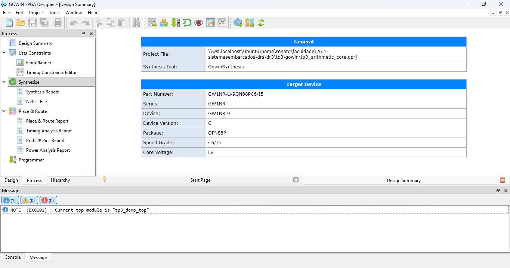
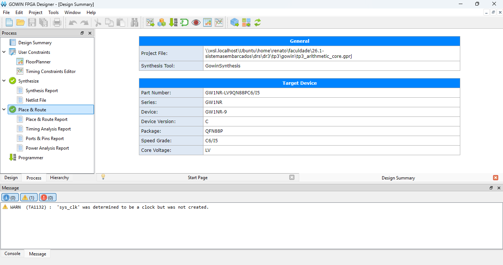
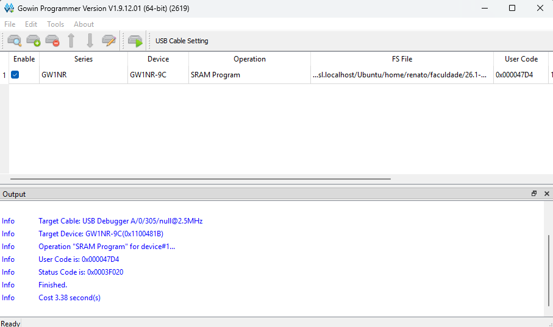
A validação física foi realizada com a Tang Nano 9K programada em SRAM. A montagem usa quatro botões no protoboard, ligados ao GND comum, e os LEDs onboard da placa. A UART foi lida pelo PowerShell no Windows, usando uma porta COM em 115200 baud.
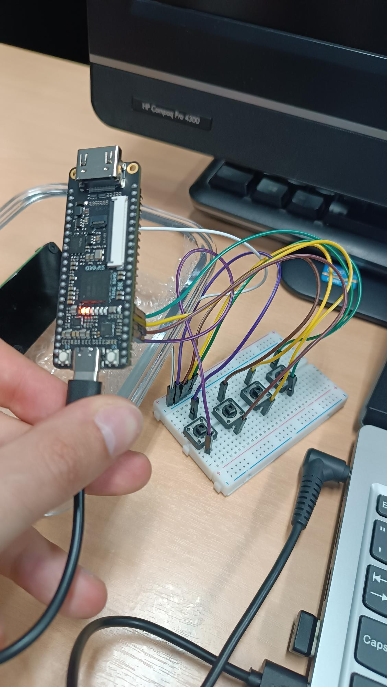
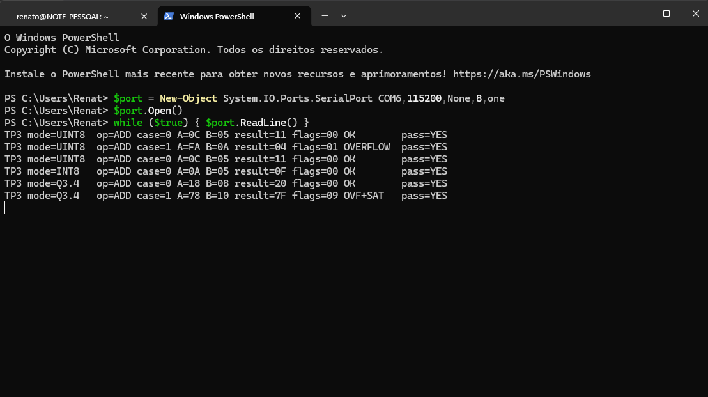


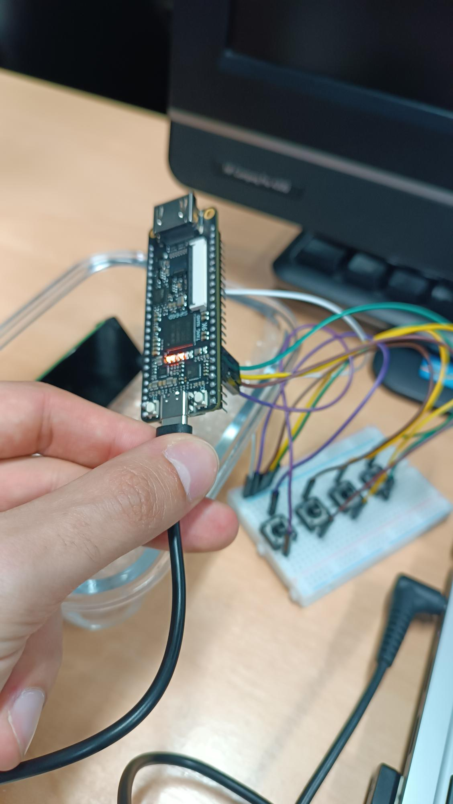
As simulações demonstram que as unidades aritméticas retornam resultados e flags esperados nos casos normais e nos casos de borda. Em inteiros, os testbenches cobrem overflow, underflow, resto de divisão e divisão por zero. Em ponto fixo, a saturação impede wrap-around silencioso, tornando explícito o limite numérico do formato Q3.4.
No minifloat E4M3, a implementação cobre alinhamento de expoentes, cancelamento, normalização, overflow para infinito e underflow para zero. Como o formato é reduzido, a precisão é limitada; por isso a flag inexact é relevante para documentar truncamentos e perda de representatividade.
A validação física confirma que o bitstream programado na FPGA executa os mesmos vetores demonstrativos validados em simulação. A UART complementa os LEDs porque apresenta texto completo com modo, operação, operandos, resultado e flags.
| Grupo | Caminho | Conteúdo |
|---|---|---|
| Código | gowin/src/*.v | Módulos Verilog do núcleo e top. |
| Gowin | gowin/tp3_arithmetic_core.gprj | Projeto Gowin configurado para Tang Nano 9K. |
| Constraints | gowin/src/tp3_arithmetic_core.cst | Mapeamento de clock, reset, botões, LEDs e UART. |
| Testes | sim/*.v | Testbenches das unidades e do top. |
| Evidências | evidencias/ | Waveforms, Gowin, UART e fotos do hardware. |
O projeto atende ao enunciado do TP3 ao implementar um núcleo aritmético modular, com suporte a inteiros com e sem sinal, ponto fixo e ponto flutuante simplificado. As operações foram verificadas por testbenches com casos típicos e de borda, e o projeto foi sintetizado, roteado, programado e testado na Tang Nano 9K.
A combinação de logs, waveforms, relatórios Gowin, capturas do Programmer, terminal UART e fotos da placa demonstra a correção funcional e a reprodutibilidade da implementação.